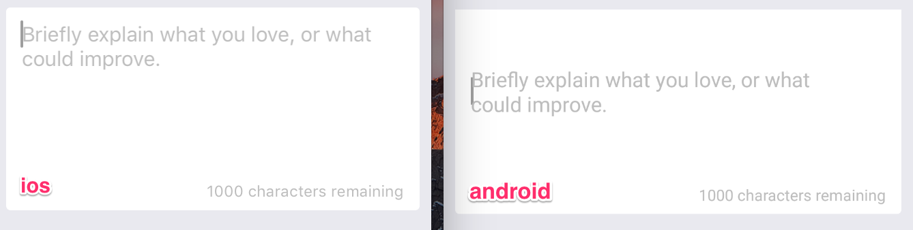
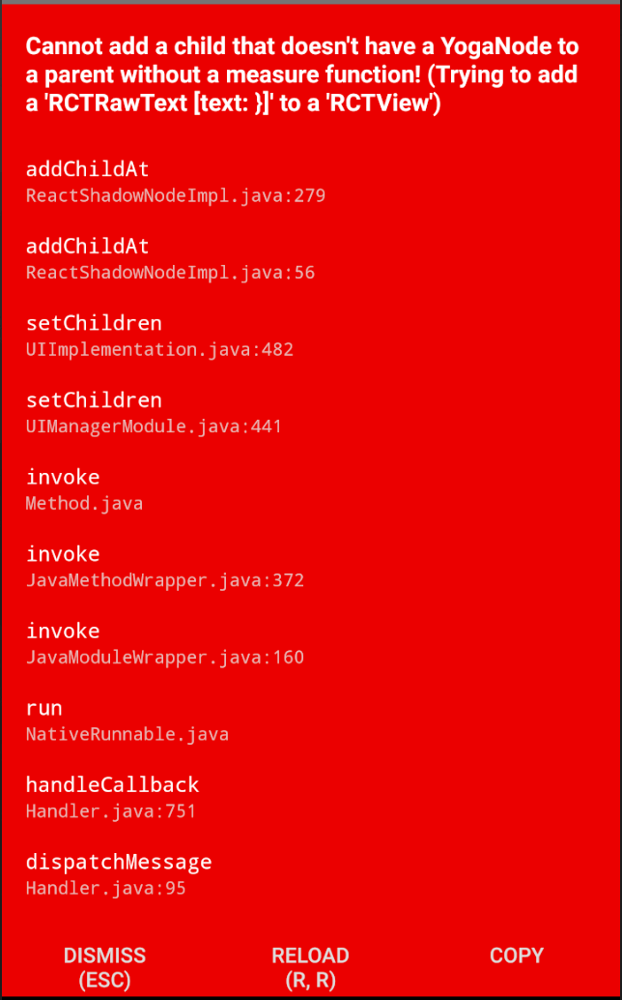

React Native - 踩坑纪录
记录下自己在 RN 开发中遇到的一些问题。
RN 组件相关
TextInput
当 TextInput 高度超过一行文本时，发现文字显示在 iOS 上是顶端对齐，而在 Android 上则是垂直居中，如下图：

解决方法是通过为 TextInput 设置 textAlignVertical: "top" 属性，相关 issue 见：Render Multiline Text at start instead of center
这时候我们可以给根布局设置接收触摸事件：
1 | |
这样当输入焦点之外区域触摸后，通过调用 Keyboard.dismiss() 方法强制收起键盘，曲线救国。
这个问题只出现在 RN 版本 0.55.x，如果不升级的话只能用下面比较不优雅的方式来解决：
1 | |
相关 issue 见：issues/18272
KeyboardAvoidingView
该组件在 Android 和 iOS 上的表现有区别，所以我们会区分平台使用不同的 behavior，比如下面这样：
1 | |
padding 模式下，当键盘弹起的时候，你的 view 会向上弹起并被压缩。使用 padding 作为 behavior 的时候，在 iOS 上表现比较好，而在 Android 上则不设置 behavior 比较好。
position 模式下，view 整体会向上滑动。这种模式 Android 和 iOS 上表现一致，但是前提是此时 KeyboardAvoidingView 是根 view。同时这也会造成一个问题，那就是键盘弹出后，输入组件会一直占有焦点，这在安卓上还好，可以通过返回键关闭键盘，而在 iOS 设备上就会造成键盘无法被关闭的尴尬。解决这一问题的方法是通过在 KeyboardAvoidingView 设置接收触摸事件，当在输入焦点之外获得点击时收起键盘：
1 | |
ImageBackground
有没有发现给 ImageBackground 设置 style 的时候，其中某些属性似乎不起作用？比如设置 border 似乎没有效果。其实看下源码就可以发现，原来 style 属性里面还有个 imageStyle 属性，类似 border 和 borderRadius 这样的属性要设置到 imageStyle 上才有效。
FlatList/SectionList
与 ImageBackground 类似，在给 FlatList 设置 paddingBottom 的时候，发现不起作用，后来在这个 issue 下找到了解决办法：FlastList/SectionList 中有个 contentContainerStyle 属性，代表 list 中的 content 容器的 style 属性。所以如果想要为 list 设置 paddingBottom，在这个属性上设置才能起作用。
我们知道在 Android 中加载大量列表数据时，RecyclerView 的性能是比较好的，因为它可以复用 view，而在 RN 中如果你用 FlatList 直接加载成百上千的数据的时候，你会发现整个界面会变得非常卡，所以这种情况下我们就需要懒加载。FlatList 本身是支持增量加载的，只不过需要一些额外的处理。
首先，FlatList 中有一个 initialNumToRender 属性，用于指定初始加载的数据，我们可以设置为 10，这个看你的需求了，一般根据 item 的高度来定。然后 FlatList 还有一个 onEndReached 属性，我们可以在这里定义一个方法，用于指定当列表滑动到底部的时候触发的事件。有了这两个属性，我们就可以对 FlatList 中的数据进行懒加载了。
1 | |
可以看到，FlatList 中数据源来自 this.state.productList，然后在 onEndReached 中调用了一个 lazyLoadProducts 方法：
1 | |
我们首先将完整的数据保存在 props 中，然后在 onEndReached 中每次多加载 10 条新数据。
可以看到上面的 FlatList 中还定义了一个 onEndReachedThreshold 属性，表示 FlatList 可见部分离底部多远的时候会触发 onEndReached 方法。比如我们定义为 0.5，则如果可见部分为 10 条数据，那么当我们向下滑动 5 条数据的时候，就会去加载另外 5 条新数据。
PanResponder
onPanResponderMove和Animated.event()的结合使用
利用 PanResponder 做了一个拖动调节图标位置的功能，网上找的方法是在 onPanResponderMove 中使用 Animated.event() 来对 View 进行移动。实现效果不错，但是发现一旦在 onPanResponderMove 中使用了 lambda 表达式后，就不起作用了。后来网上找到这个 issue，发现原来 Animated.event() 会返回一个方法，并且接收 event 和 gestureState 作为参数，所以我们只要去调用一下这个方法即可：
1 | |
UIManager
我们可以使用 UIManager 来测量某个 view 的位置，这个在一些特殊的场合非常有用。
测量某个 view 的位置前，我们首先需要获得该 view 的引用：
1 | |
获得 view 的引用后，就可以通过 view 获得 nodeHandle 去测量 view 的位置了：
1 | |
从示例代码中可以看到，在测量方法中，我们定义了一个测量成功的回调，我们可以在这里获得测量到的当前 view 的中心点坐标，高度，宽度，距离页面顶端的 x 坐标，y 坐标。
其他 Tips
-
diplay: none在 Android 上失效的问题
这个一般是由于和 position 混用造成的，只要在需要使用 display: none 的组件外添加一个 absolute 位置即可：
1 | |
更进一步，为了防止你隐藏掉的 View 阻挡被覆盖的其他 View 的点击事件，以及在需要隐藏的 View 里存在可点击的组件，则还需要使用到 View 的 pointerEvents 属性做以下设置：
1 | |
当展示出来的时候才可点击，如果隐藏则不接收点击事件。
- 组件循环更新的问题
有一种常见的场景是，当有一个组件 A 使用外部组件 B 的 state 作为 prop，并且组件 A 通过回调方法来传送数据（setState）给外部组件时，此时如果外部组件 B 在回调方法中也调用了 setState 方法，那么就会造成内部组件的 state 循环更新的问题。
一种解决方法是在组件 A 中的每一个需要传送数据到外部组件中的方法（setState）中添加一个标记，然后在 componentDidUpdate 中根据该标记来判断是否应该对回调方法进行调用。如下：
1 | |
- 屏幕闪动的问题
在 RN 0.62 以上的版本，如果为图片添加 flex: 1 的 style 就会出现页面闪动的情况，去除之后就能解决。
三方库相关
常见问题
三方库无法下载，卡在
checking installable status这种情况大概率是你之前下载过，导致机子本地 npm 缓存与三方库冲突。此种情况，我一般通过全局安装，然后使用
npm link来解决。依赖未正确 link 导致的报错
很多时候安装三方库之后都会遇到各种各样的报错，这种时候不要慌，先对照三方库 README 检查下是不是缺了某些步骤，如果还是无法解决就去翻翻 issue，然后再使用谷歌搜索关键字。不要急着求助，因为 99.99% 的情况下，你遇到的问题别人早就已经遇到过了。
实在不行就把依赖删了然后重新安装并一步步检查 link 步骤有没有漏掉。
重启电脑可以解决大部分令人原地爆炸的奇怪问题。
@ant-design/react-native
- 3.x 版本一些组件 bug 很多，比如 Modal 等，还有使用的 ViewPager 版本过旧，如果造成 “register two views with the same name RNCViewPager” 的问题可以尝试删除 @ant-design/react-native/node-module 下的 @react-native-community/viewpager。
react-redux
- action 名字尽量不要和 reducer 的名字一样，这样会导致调用 action 的时候报 “xxx is not a function 的错误”。
关于如何使用可以看我之前写的文章：React Native - Redux 入门 和 React Native - 从 Redux 进阶谈起
react-native-scrollable-tab-view
在 Android 中，如果在该库的核心组件 ScrollableTabView 外嵌套使用了 ScrollView 的话，就会出现在 ScrollableTabView 中的内容无法显示的问题，在 iOS 上却又没有这个问题。
找了很多解决方案，但是都不太可用，比如为 ScrollView 的 contentContainerStyle 设置 {flex: 1}。但是这样一来整个 ScrollView 就无法滚动了，所以摸索出一个可行的解决方案是为 contentContainerStyle 设置高度：
1 | |
这种方法只能算是一个 hack 吧，即使是通过测量 view 的高度也不是很好，因为如果 tab 是很长的一个 list，会造成比较大的性能开销，而如果动态增加 ScrollView 的高度的话，要是 tab 里面包含长图也会需要做额外的处理。所以还是不推荐嵌套 ScrollView 使用。
react-native-puti-pay
这是一个微信和支付宝支付库，如果集成该库的同时也集成了 react-native-wechat，则会造成冲突：
1 | |
上面只列出了两种冲突项，全部的冲突项可能达几十个，主要是因为这两个库同时引用了 libWeChatSDK.a，所以只要删除其中一个库中的该引用即可。
react-native-debugger
配合 redux 使用：
1 | |
在 console 中获取 AsyncStorage 中的数据：
1 | |
react-native-router-flux
这个在安卓上是比较常见的操作，但是在 RN 中结合 react-native-router-flux 使用却折腾了好长时间，这里记录下自己的实现方式。
首先，react-native-router-flux 原生就支持，我们不需要通过自己去添加 BackHandler 监听器来实现。当我们使用 react-native-router-flux 时，我们一般用 Router 作为根节点，所以我们通过 Router 为其设置 backAndroidHandler 属性即可。
1 | |
可以看到，这里定义了一个 onExitApp 方法并且设置到了 backAndroidHandler 属性上，该属性会根据返回值来决定是否退出应用（false 时退出应用）。
在 onExitApp 中，我们首先判断当前应用是否处于根页面（可以通过 react-native-router-flux 中的 Actions.currentScene 获取当前 Scene），如果不是根页面则作为普通的返回键处理（弹出一页），否则判断是否在指定时间内连续点击，连续点击才退出应用，否则弹出 Toast 提醒。
假如有这样一个需求，某个页面下有一个 WebView 组件，我们需要控制当在该页面按下返回键时后退一页（相当于从网页的历史记录中后退），而如果没有历史记录时则直接退出。这个要怎么实现呢？
注意到，WebView 中有一个 onNavigationStateChange 方法，当新的页面加载或退出时该方法会被调用。因此一种可行的方法是，在该方法中监听页面变化并读取页面加载后的数据。以下是该方法中的部分数据：
1 | |
因此，可以通过事件中传回的 canGoBack 值判断此时 WebView 是否可以返回，如果可以则使用 WebView 的 ref 去调用 goBack() 返回上一页，否则使用 Actions.pop() 退出当前页面。
基本代码如下：
1 | |
当然由于返回按钮可能不在当前组件下，如果你使用的是 react-native-router-flux 和 react-redux，则可以定义一个返回按钮的组件，该组件通过全局 state 树接收点击事件的 function，然后设置到 Scene 的 renderLeftButton 属性中，最后，在需要处理 WebView 的地方设置返回事件到返回按钮中即可（注意：react-redux 是可以接收 function 作为属性的，不然就没法设置事件了）。
react-native-amap3d
这是一个高德 3D 地图库。
该库 iOS 部分只能使用 CocoaPods 安装，花了很多时间在安装 Specs 依赖上，只要一 pod install 就会卡在 cloning into /Users/xxx/.cocoapods/repo/master。
尝试了很多国内镜像，发现大多数都已经不能用了，然后也尝试了国内镜像 clone Specs 到 ~/.cocoapods/repos/master 里，发现也没啥用，因为 install 的时候还是会识别不了（因为太久没更新）。
后来发现原来这东西的确只能从官方的 Github 上 clone，只不过由于体积比较大（几个G，被限速了），只要耐心等待它 clone 完毕就行了。反正每台电脑只要操作一次就够了，后面的更新基本都很快的。
花了一晚上 clone 完，然后 install，结果编译还是不通过，老是报依赖找不到（ld: library not found for -lDoubleConversion）。尝试各种方案无果，后来看到一个 stackoverflow 上的回答才明白，原来使用 cocoapods 的项目要通过 .xcworkspace 打开项目而不是 .xcodeproj。发现真相的我差点眼泪掉下来。
然后重新打开项目跑了之后，依旧继续报错（duplicate symbol _aes_encrypt_key128 in ios/Pods/AMap3DMap/MAMapKit.framework/MAMapKit）。
清理了缓存（npm cache clear –force ; watchman watch-del-all ; rm -rf $TMPDIR/react-* ; rm -rf ~/.rncache）重新安装依赖（rm -rf node_modules && npm install）后，问题依旧存在。
你以为我要崩溃了吗？不，作为一个程序员怎么能这么容易就崩溃？当然是去玩几把 FIFA 然后回来继续解决问题啊。
仔细看了下报错信息，发现是 react-native-amap3d 和 react-native-update 中的 libRCTHotUpdate 存在重复 symbol 所以一直编译不过。
确定问题后解决起来就简单了，搜到了这篇文章。原理很简单，把 react-native-amap3d 中会造成 symbol 重复的内容去掉就可以了（因为只是 x86_64 这一个平台中的重复 symbol，所以影响不大，如果是其他平台，操作也类似），具体步骤如下：
首先定位到 MAMapKit.framework，
project_name/ios/pods/AMap3DMap/MAMapKit.framework，将其中的MAMapKit复制出来将 MAMapKit 中 x86_64 平台的部分提取出来并命名为 MAMapKit.x86_64：
1 | |
- 将其中包含重复 symbols 的部分查找出来并保存的 symbols 文件中：
1 | |
- 解压 MAMapKit.x86_64：
1 | |
- 将 symbols 文件中的符号列表从 MAMapKit-x86_64-master.o 文件中全部删除掉，并生成一个新的文件 MAMapKit-x86_64-master.o.strip
1 | |
- 将去除了重复 symbols 的文件重新打包并命名为 MAMapKit.x86_64_solved：
1 | |
- 使用无重复的 x86_64 平台包替换旧的，然后合成新的 MAMapKit：
1 | |
复制 MAMapKitNew 到 MAMapKit.framework 中，删除原来的 MAMapKit 然后重命名 MAMapKitNew 为 MAMapKit，大功告成！
Xcode 重新编译，编译通过，项目成功运行！
尤其是当处于室内的时候，这种情况出现得比较频繁（定位后的回调中数据均为 0）。该库作者目前也没有较好的解决方案，所以最后决定在安卓上自己来定时刷新定位，如下：
1 | |
我们只在 iOS 上使用地图自带的定位功能，而在安卓上添加一个 marker 作为用户位置，并且自己控制定位频率：
1 | |
这种方式唯一的不足就是定位的图标不是动态的了，比如精度范围和方向都无法显示出来。但是为了获取到定位，这也算是一种 trade off 了吧。
其他
代码规范
你有没有在测试安卓的时候，遇到过这个报错：Cannot add a child that doesn’t have a YogaNode to a parent without a measure function! (Trying to add a ‘RCTRawText [text: }]’ to a ‘RCTView’)
这么一点点信息，完全让人摸不着头脑对不对？最后折腾半天，发现原来是因为某个角落里躺着一个 { 或者 }，砸电脑的心都有了。
所以，一定要注意代码规范啊， 不要在代码里乱嵌套代码或者乱写三目运算来判断某个 View 的显示或隐藏等等。
iOS 相关
模拟器调试
大部分情况下，如果在模拟器上跑不起来，只要关掉 Metro Bundler，然后使用 Xcode Clean 再重新运行就可以解决，有时候在执行了 Clean 之后可能会遇到 React 相关的 Target 构建报错，一般是依赖树没有构建完整，只要多执行几次 Run 等待依赖全部加载完毕就能解决。
如果还不行可以尝试卸载模拟器上的应用然后重新构建，也能解决很多奇怪的运行不起来的问题。
实在不行再尝试『全清』大法：
1 | |
相关 issue：issues/1924，issues/4968
真机调试
大部分问题由于项目依赖的运行环境不一样，所以也没有什么统一的解决方案，只能靠自己谷歌慢慢摸索解决，使用上面模拟器中同样的方式有时候也能解决绝大部分问题。
但是有些问题比较特殊，而且出现次数较多，比如：RN 中 third-party 相关的问题。所以这里顺便记录下。
-
Build input file double-conversion cannot be found
出现这个错误一般是没有安装 double-conversion 依赖，只要运行下面的命令就能解决：
1 | |
-
ios-configure-glog.sh: line 15: ./configure: No such file or directory
和 1 类似，也是比较常见的错误，解决方案：
1 | |
这里出现报错的是 glog-0.3.4，如果你是其他 third-party 依赖或者其他版本也都可以用这种方法解决。
-
'config.h' file not found
一般出现在 1 之后，手动运行一下 configure 脚本就能解决：
1 | |
-
No member named '__rip' in '__darwin_arm_thread_state64
这个问题一般比较少见，但是我遇到过多次，只出现升级到 Xcode 10 之后而且使用的 RN 版本低于 0.57 的情况下。
造成这种错误一个可能的原因是，由于手动构建 glog，在真机上因为缺乏 arm 平台的相关配置导致出现错误。
我目前参考的是这个已经被关闭的 issue 中的 workaround 来解决这个问题的：
1 | |
如作者所说，RN 0.57 之后的 glog-0.3.5 脚本已经兼容了 Xcode 10（不能在 RN<0.57 中直接使用这个脚本），这个问题也就不存在了，所以推荐升级来解决，如果不想升级也可以用他提供的方法来解决。相关的 issue：issues/20774
另外，如果是 No member named '__rip' in '__darwin_i386_thread_state64，则可以添加
1 | |
修改后的内容为：
1 | |
-
Unknown argument type '**attribute**' in method -[RCTAppState getCurrentappState:error:]
同样只有 rn 0.55.4 或更老的版本才会出现这个问题，相关 issue 见 issues/25138，解决方案在这里：
1 | |
-
Undefined symbols for architecture x86_6: _OBJC_CLASS_xxxxx
这个问题一般是由 CocoaPods 缓存引起的，解决方法：
1 | |
参考：相关 issue
Android 相关
Android 不推荐使用真机调试，原因是 hot reload 常常失效（RN 0.60 以上版本似乎体验改善很多了）。
真机上会遇到的问题和 iOS 差不多，这里就记录一些比较常用的命令吧。
1 | |
另外提供 iOS 相关的常用命令：
1 | |
其它问题
- 无法连接到 packager server，相关 issue：issue-15388，issue-23380
通常是由于在 MainApplication 中导入了 BuildConfig 造成的，删除即可，见：Can’t open developer menu on react-native debug build
- Attempt to invoke virtual method ‘android.graphics.drawable.Drawable android.graphics.drawable.Drawable$ConstantState.newDrawable(android.content.res.Resources)’ on a null object reference
算是 Android 上比较令人头疼的一个问题了，目前除了重启 packager 没有更好的解决办法了，相关 issue 见 issue-17530，该 issue 目前仍然处于 open 状态中。